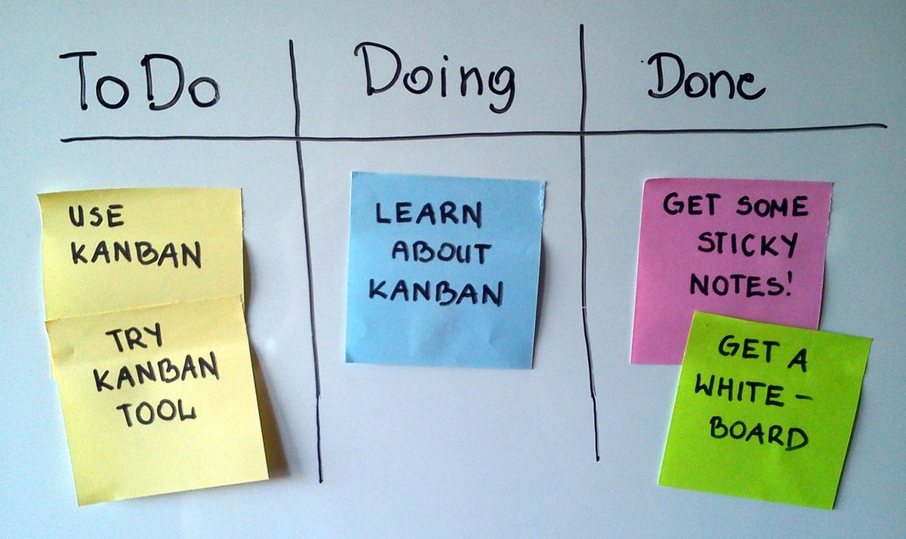

Ya, Trello gratis dan kamu bisa memakainya tanpa langganan. Paket Free seharga 0 dolar sudah mencakup kartu tanpa batas, Power-Up tanpa batas di tiap papan, aplikasi HP dan laptop, serta kerja bareng sampai 10 orang dalam satu Workspace. Kamu cukup daftar dengan email atau akun Google, lalu langsung bikin papan proyek pertamamu.
Trello adalah alat manajemen proyek dari Atlassian yang bekerja dengan sistem papan, daftar, dan kartu. Satu papan mewakili satu proyek, daftar membagi tahapan kerja seperti Belum Dikerjakan, Sedang Dikerjakan, dan Selesai, lalu kartu mewakili tiap tugas yang bisa digeser dari satu daftar ke daftar lain. Paket gratisnya bukan masa percobaan, melainkan paket permanen seharga 0 dolar per November 2026 menurut halaman harga resmi Trello. Di paket ini kamu mendapat kartu tanpa batas, Power-Up tanpa batas di tiap papan, tanggal tenggat dan penanggung jawab di tiap kartu, log aktivitas tanpa batas, template papan, autentikasi dua faktor, serta aplikasi iOS, Android, dan desktop. Batasnya ada empat: maksimal 10 papan dan 10 kolaborator per Workspace, lampiran maksimal 10 MB per berkas, dan otomatisasi 250 kali jalan per bulan per Workspace. Kalau kebutuhanmu masih di bawah batas itu, paket gratis sudah cukup untuk tugas kuliah, proyek komunitas, sampai kerja tim kecil.
Kenapa Trello dikira berbayar?
Trello dipakai banyak perusahaan dan tim produk, tampilannya rapi seperti alat kantor berbayar, dan halaman harganya menampilkan paket Standard, Premium, dan Enterprise dengan harga dolar per pengguna per bulan. Wajar kalau kamu mengira alat ini cuma bisa dipakai setelah langganan. Padahal Trello punya paket Free permanen yang duduk di samping tiga paket berbayar itu, dan paket gratisnya bukan versi percobaan 14 hari. Masa percobaan Premium memang ada, tapi berakhirnya percobaan tidak mengunci akunmu, kamu kembali ke paket Free.

Foto: Jeff.lasovski, CC BY-SA 3.0, via Wikimedia Commons
Apa saja yang gratis di Trello?
Paket Free Trello per November 2026 mencakup kartu tanpa batas, jadi kamu bisa menambah tugas sebanyak apa pun di tiap papan. Tiap papan juga bisa memakai Power-Up tanpa batas, yaitu sambungan ke aplikasi lain seperti Google Drive, Slack, dan kalender. Tanggal tenggat dan penanggung jawab bisa dipasang di tiap kartu, jadi jelas siapa mengerjakan apa dan kapan selesainya. Log aktivitas tercatat tanpa batas, template papan dari komunitas Trello bisa langsung dipakai, dan akunmu bisa dilindungi autentikasi dua faktor. Aplikasi Trello tersedia untuk iOS, Android, dan desktop, dan semuanya tersinkron, jadi tugas yang kamu geser di HP langsung berubah di laptop. Satu hal yang sering terlewat, paket gratis ini juga memberi Inbox untuk menampung tugas yang masuk dari email, Slack, dan Microsoft Teams sebelum kamu rapikan ke papan.
Bagaimana cara memakai Trello gratis untuk pemula?
Mulainya cepat, kamu bisa langsung membuat papan pertamamu. Ikuti langkah ini.
- Daftar gratis di trello.com dengan email atau akun Google.
- Buat satu Workspace, yaitu wadah timmu. Pisahkan Workspace kerja dan pribadi supaya jatah 10 papan tidak saling berebut.
- Buat papan pertama, beri nama sesuai proyeknya, misalnya Skripsi atau Acara Angkatan.
- Tambah tiga daftar: Belum Dikerjakan, Sedang Dikerjakan, dan Selesai. Tiga kolom ini sudah cukup untuk kebanyakan proyek.
- Tambah kartu untuk tiap tugas, lalu klik kartunya untuk mengisi deskripsi, tenggat, penanggung jawab, dan checklist.
- Undang anggota tim lewat email. Paket gratis menampung sampai 10 kolaborator dalam satu Workspace.
- Geser kartu dari satu daftar ke daftar lain begitu tugasmu beres. Gerakan geser ini yang membuat progres tim terlihat sekilas.
Supaya papanmu tidak berantakan, pakai satu papan untuk satu proyek dan jangan menumpuk semua tugas di satu daftar. Kalau sebuah kartu butuh berkas besar, simpan berkasnya di Google Drive lalu tempel tautannya di kartu, karena lampiran langsung di paket gratis dibatasi 10 MB per berkas.
Apa batas paket gratis Trello yang perlu kamu tahu?
Paket gratis Trello bukan tanpa batas, dan mengetahuinya sejak awal membuatmu tidak kaget di tengah jalan. Pertama, satu Workspace hanya boleh punya 10 papan. Ini batas yang paling cepat terasa, karena tiap proyek butuh papannya sendiri. Solusinya, buat Workspace terpisah untuk urusan yang berbeda, atau arsipkan papan proyek yang sudah selesai. Kedua, satu Workspace menampung maksimal 10 kolaborator. Ketiga, tiap lampiran dibatasi 10 MB per berkas. Keempat, otomatisasi dibatasi 250 kali jalan per bulan per Workspace, jadi otomatisasi sederhana seperti memindah kartu yang checklistnya selesai masih aman, tapi jangan mengandalkannya untuk alur kerja yang berat. Yang tidak masuk paket gratis adalah tampilan kalender, timeline, tabel, dan dashboard. Kalau kamu cuma butuh papan kanban dengan tenggat dan penanggung jawab, tidak satu pun dari batas ini terasa.
Foto: Shixart1985, CC BY 2.0, via Wikimedia Commons
Kapan kamu perlu naik ke paket berbayar?
Naik paket baru masuk akal kalau kamu sudah mentok di salah satu batas tadi. Tim yang anggotanya lebih dari 10 orang, proyek yang butuh lebih dari 10 papan dalam satu Workspace, atau tim yang butuh tampilan timeline dan dashboard untuk laporan ke atasan, itulah tanda paket gratis sudah kekecilan. Per November 2026, Standard dipatok 5 dolar per pengguna per bulan bila ditagih tahunan, dan Premium 10 dolar dengan skema yang sama. Sebelum membayar, manfaatkan masa percobaan Premium gratis 14 hari untuk tiap Workspace, dan uji dulu apakah tampilan tambahannya benar-benar mengubah cara timmu bekerja. Kalau setelah 14 hari ternyata papan kanban biasa sudah cukup, kembali saja ke paket Free, tidak ada yang hilang.
Jadi, Trello memang gratis untuk pemakaian sehari-hari, selama kebutuhanmu masih muat di batas paket Free. Buat satu papan hari ini, isi dengan tiga daftar, dan biarkan tugasmu berpindah dari Belum Dikerjakan ke Selesai. Alatnya gratis, yang mahal cuma kebiasaan menunda.
Baca juga: Figma Ternyata Gratis: Desain Tampilan Aplikasi Ala Profesional Tanpa Langganan, ChatGPT Gratis Ternyata Sudah Cukup Buat Harian, Ini yang Kamu Dapat Tanpa Langganan Plus, dan Dikiranya Rapat Online Lebih dari 40 Menit Harus Bayar, Ternyata Google Meet Gratis Sampai 60 Menit, atau lihat artikel Other lainnya dan artikel riset lain di Blog.
Sumber dan Info Resmi
Fakta dan langkah di artikel ini merujuk ke sumber berikut:
- Trello Pricing: halaman harga resmi Trello, dicek 11 November 2026. Paket Free 0 dolar untuk sampai 10 kolaborator per Workspace, kartu tanpa batas, Power-Up tanpa batas, tanggal tenggat dan penanggung jawab, aplikasi iOS, Android, dan desktop, autentikasi dua faktor, template papan, log aktivitas tanpa batas, dan Inbox. Standard 5 dolar per pengguna per bulan bila ditagih tahunan, Premium 10 dolar, Enterprise 17,50 dolar. Tampilan kalender, timeline, tabel, dan dashboard masuk paket Premium.
- Toolora: ulasan Trello berdasarkan trello.com/pricing, diperiksa 5 November 2026. Paket Free mencakup 10 papan, 10 kolaborator, lampiran 10 MB per berkas, dan 250 kali jalan otomatisasi per bulan.
- ToolSurf: panduan upgrade Trello 2026. Paket Free permanen, bukan masa percobaan. Tiap Workspace bisa ikut percobaan Premium gratis 14 hari. Workspace yang turun dari paket berbayar kembali jadi Workspace gratis dengan 10 papan.
- AtSoho: batas paket gratis Trello berdasarkan halaman harga dan bantuan resmi Trello. Batasnya 10 papan dan 10 kolaborator per Workspace, lampiran 10 MB per berkas, otomatisasi 250 kali per bulan. Tampilan kalender, timeline, dashboard, dan peta butuh paket berbayar.
- KapanLagi: panduan Trello Bahasa Indonesia yang masih menulis papan tidak terbatas, padahal batas resmi per November 2026 adalah 10 papan per Workspace.